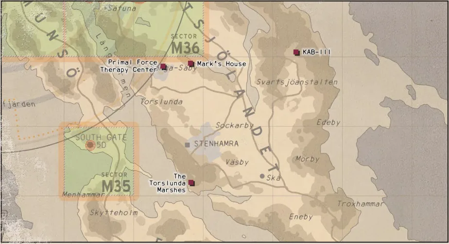
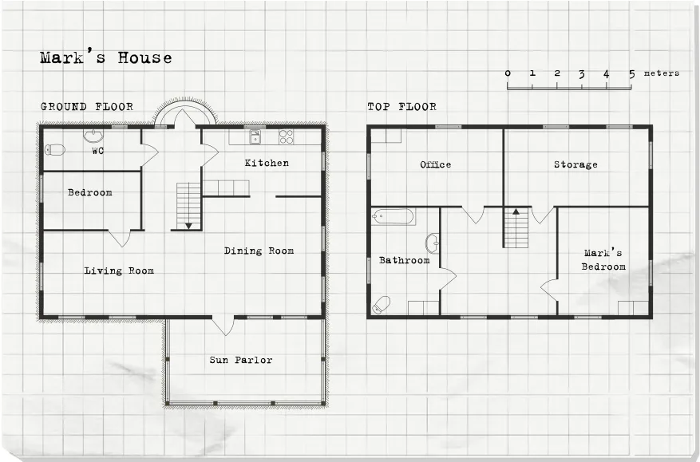

123KOrt 1: Marks Haus S. 140
Mark lebte bei seiner Tante in einem einsamen Haus an einem kleinen See östlich von Sånga-Säby. Das zweistöckige Holzhaus ist von dichtem Wald umgeben. Windspiele hängen von den Ästen, und aus den offenen Fenstern dringen Grateful-Dead-Songs oder andere psychedelische Rockmusik.
Das Haus ist unordentlich. Musikinstrumente und gemaserte Steine liegen überall an den Wänden. Es riecht nach Schimmel, Räucherwerk und faulendem Essen. Überall stapeln sich Bücher über inneren Frieden, Heilung und Engel. Tante Emi öffnet nur zögernd die Tür.
Marks Zimmer im zweiten Stock ist sehr aufgeräumt. Er besaß eine teure Fotoausrüstung und hatte sich eine eigene Dunkelkammer gebaut. An den Wänden hängen Fotos der Vagabunden und ihrer Graffiti.
(Platzhalter – im Tool steht der vollständige übersetzte Buchtext.)
Countdown
- 1. Die Albträume beginnen. ▾
- 2. Ein Vagabund wird nachts gesehen. ▾
- 3. Die Tiere werden unruhig. ▾
- 4. …
- 5. …
Ärger
Tante Emi ist nicht daran gewöhnt, Besuch zu haben. Haben die Teens Erfolg bei einer Probe auf charme, lässt sie sie hinein …
